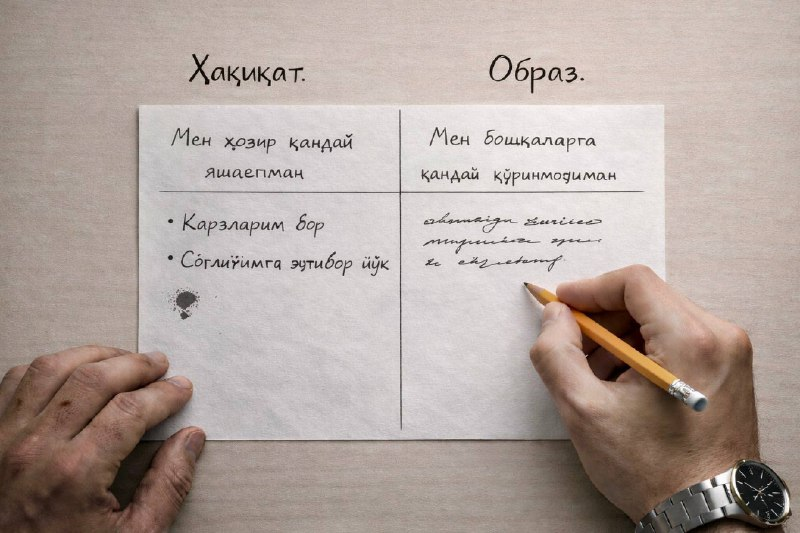

Инсоннинг икки ҳаёти…

Инсоннинг кўпинча икки ҳаёти бўлади.
Бири — у ҳақиқатда яшаб ўтаётган ҳаёти.
Иккинчиси — у одамларга айтиб берадиган, намоён қиладиган ҳаёти.
Аксар ҳолларда бу икки ҳаёт бир-биридан сезиларли даражада фарқ қилади.
Ҳаётини чўпчак қилиб айтиб бераётганда одам бехосдан баъзида ўзига ўзи хавас ҳам қилиб қўяди.
Кимдир “ишлар жойида” дейди, лекин аслида ишлари тартибсиз, мақсадлар ноаниқ.
Кимдир “ҳаммаси зўр” дейди, лекин пул масаласида, соғлиқда ёки оилавий муносабатларда оғир муаммолар бор.
Баъзилар “вақти келмади” деб ўзини овутади, ҳолбуки, ҳақиқий сабаб — қўрқув, иккиланиш ёки масъулиятдан қочиш.
Муаммо шундаки, кўпчилик ҳақиқий ҳаётини тўғирлашдан кўра, ўз образини сақлаб қолишга кўпроқ куч сарфлайди.
Натижада гаплар чиройли, баҳоналар асослидек туюлади, аммо ҳаётнинг ўзи ўзгармай қолаверади.
Ўсиш эса образдан эмас, ҳақиқатдан бошланади.
Ўзингизга рост гапиришдан.
Қайси жойда ўзингизни алдаяпсиз — айнан ўша жойда сизнинг ўсиш нуқтангиз бор.
Бир варақ қоғоз олинг. Уни иккига бўлинг.
Бир томонига: «Мен ҳозир қандай яшаяпман?»,
иккинчи томонига: «Мен бошқаларга қандай кўринмоқчиман?» деб ёзинг.
Агар бу икки рўйхат орасида фарқни кўрсангиз — қўрқманг.
Демак, ўзгаришни айнан шу ердан бошлаш вақти келган